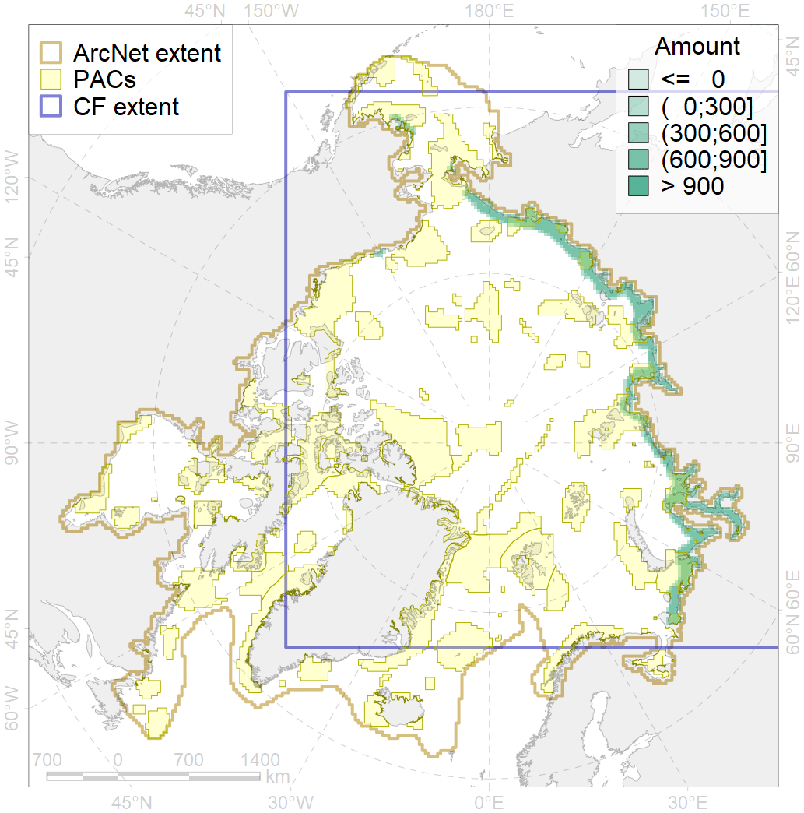
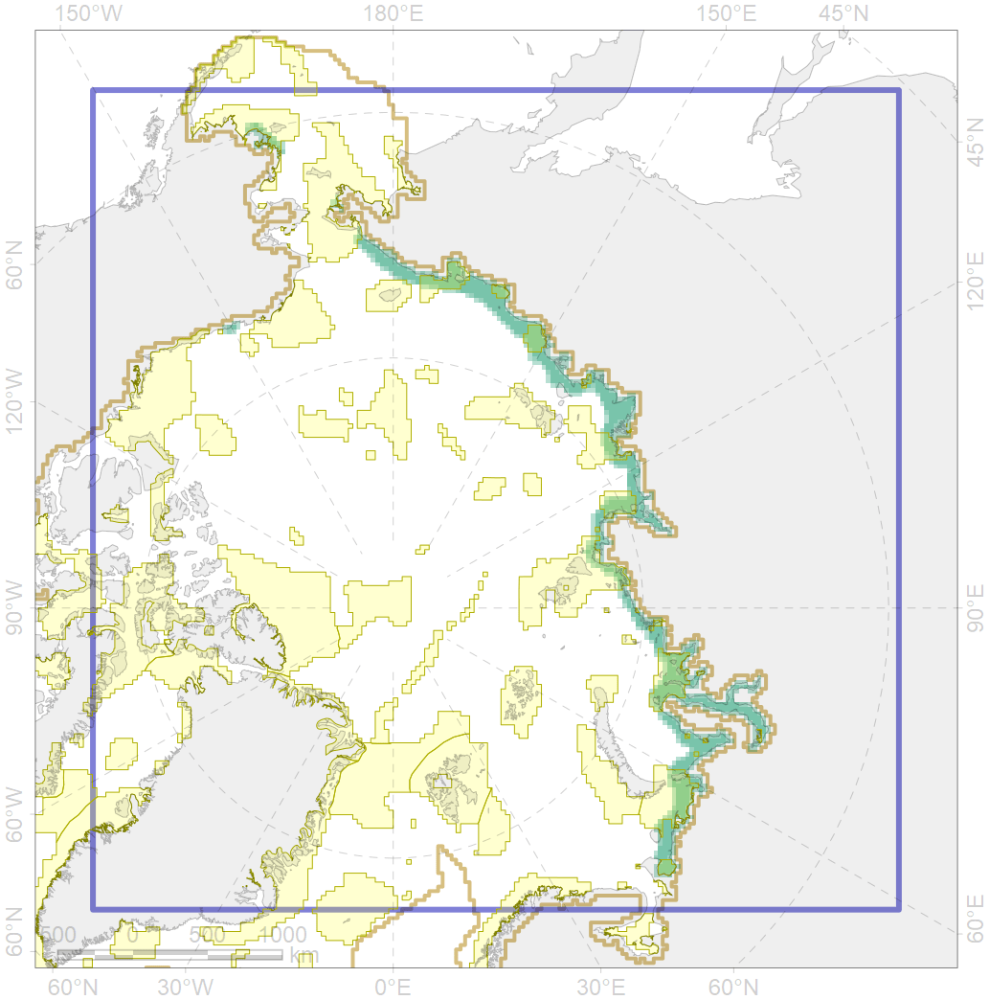

4014

| CF code | 4014 |
| CF name | Feeding area of the Siberian whitefish (Coregonus pidschian) |
| Time Period | 1950-2000s |
| Source(s) | Chereshnev, 2008; Reshetnikov, 2010 |
| Seasonality | June-October |
| Depth Horizon | 0-60 |
| Methodology | Compiled from literature sources based on field observations |
| Use Restrictions | Open access |
| Author Name | N. Chernova |
| Notes | |
| Scenario’s Target | 0.24 |
| Target Achievement | 0.380 (Scenario: 158.2%) |
| PAC | Share of the Total Amount within the PAC | Share of the Target Achievement for the ArcNet | PAC’s Contribution to the Target Achievement |
|---|---|---|---|
| 3 | 1.4%1.8% | 5.7%7.6% | 3.6%4.8% |
| 5 | 0.4%0.5% | 1.5%1.9% | 0.9%1.2% |
| 7 | 0.0% | 0.0% | 0.0% |
| 8 | 4.5%4.5% | 15.4%15.4% | 9.7%9.7% |
| 9 | 1.2%1.3% | 3.0%3.1% | 1.9%2.0% |
| 10 | 3.2%3.2% | 10.4%10.5% | 6.6%6.6% |
| 12 | 2.4%2.5% | 9.4%9.7% | 5.9%6.1% |
| 13 | 3.4%3.4% | 13.6%13.6% | 8.6%8.6% |
| 14 | 2.8%2.9% | 10.9%11.0% | 6.9%6.9% |
| 15 | 0.3%0.3% | 1.1%1.2% | 0.7%0.8% |
| 16 | 7.3%7.8% | 29.3%30.6% | 18.5%19.3% |
| 17 | 0.1%0.2% | 0.3%0.7% | 0.2%0.4% |
| 18 | 0.4%0.4% | 1.4%1.5% | 0.9%0.9% |
| 20 | 6.2%6.7% | 24.4%26.4% | 15.4%16.7% |
| 21 | 0.0%0.1% | 0.0%0.3% | 0.0%0.2% |
| 23 | 1.5%1.7% | 5.5%6.2% | 3.5%3.9% |
| inner | 35.0%37.3% | 132.1%139.8% | 83.3%88.1% |
| outer | 64.4%78.7% | 26.1%75.8% | 16.4%47.8% |
| † supplement values are for area consistence whereas principal values are for Accenter compatible gridded stats |